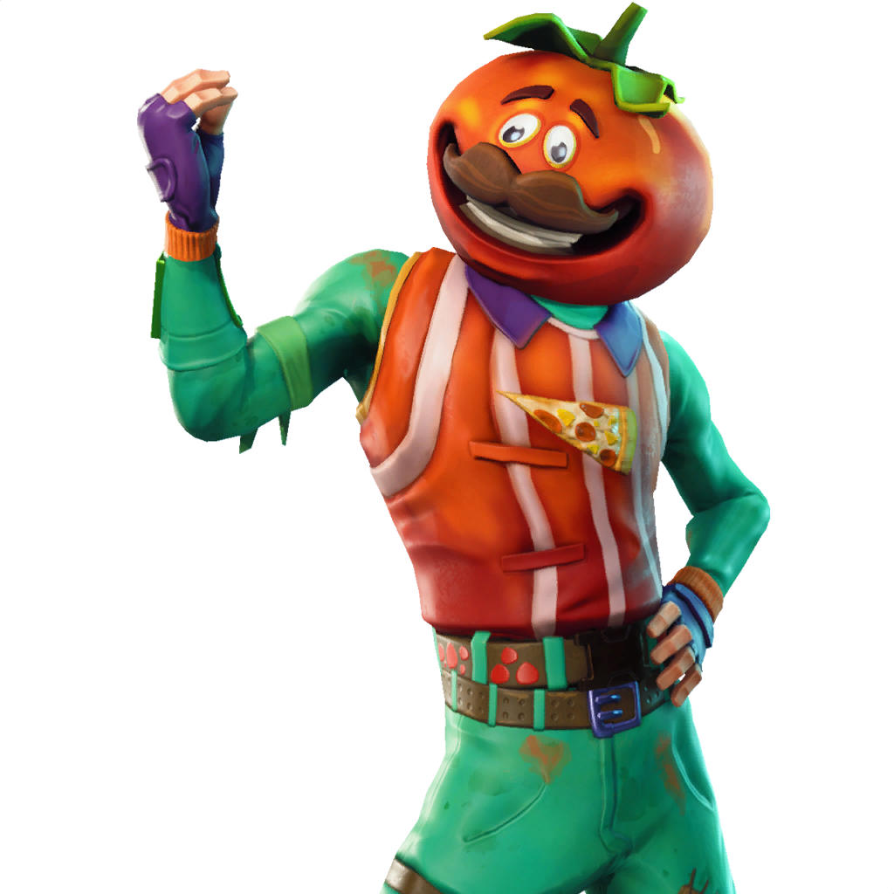

FORTNITE
Battle Royale de Fortnite es un modo JcJ con 100 jugadores GRATUITO. Un mapa enorme. Un autobús de batalla. La pericia de construcción y los entornos destructibles de Fortnite sumados a la intensidad de los combates JcJ. El último en pie gana. Disponible en PlayStation®4, Xbox One, PC y Mac. 
Jugad para subir de nivel vuestro pase de batalla y desbloquear más de 100 recompensas con un valor superior a los 25 000 paVos (suele llevar entre 75 y 150 horas de juego).
¿Lo queréis más rápido? Podréis comprar hasta 100 niveles, ¡cada uno por 150 paVos!
Novedad de la temporada: ¡Mascotas!
Subid de nivel el pase de batalla para desbloquear a Huesete, Draco y Cami, los nuevos animalitos que se os unirán en vuestro periplo por el mapa. Estos compañeros pasivos siempre estarán a vuestro lado y reaccionarán a las distintas situaciones en las que os

Si compráis el pase de batalla, recibiréis al instante dos trajes exclusivos: Calamidad y Llama DJ. Después, jugad para subirlo de nivel y conseguir más de 100 recompensas con un valor superior a los 25 000 paVos.¿Qué novedades trae el pase de batalla de la temporada 6? ¡Mascotas! Subid de nivel el pase de batalla para desbloquear a Huesete, Draco y Cami, los nuevos animalitos que se os unirán en vuestro periplo por el mapa. Estos compañeros pasivos siempre estarán a vuestro lado y reaccionarán a las distintas situaciones en las que os encontréis. Quien tiene un coleguita de combate tiene un tesoro. Como en los anteriores pases de batalla, tendréis que completar desafíos semanales para subir de nivel y desbloquear recompensas más rápido. ¡Completad suficientes desafíos semanales para descubrir recompensas más exclusivas!